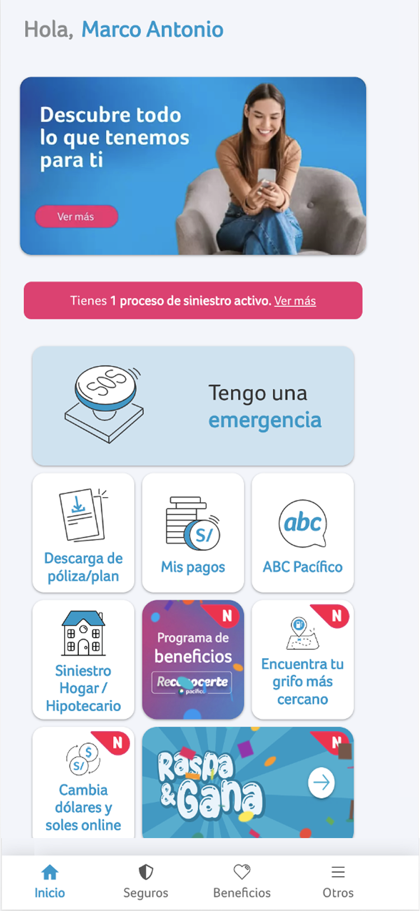
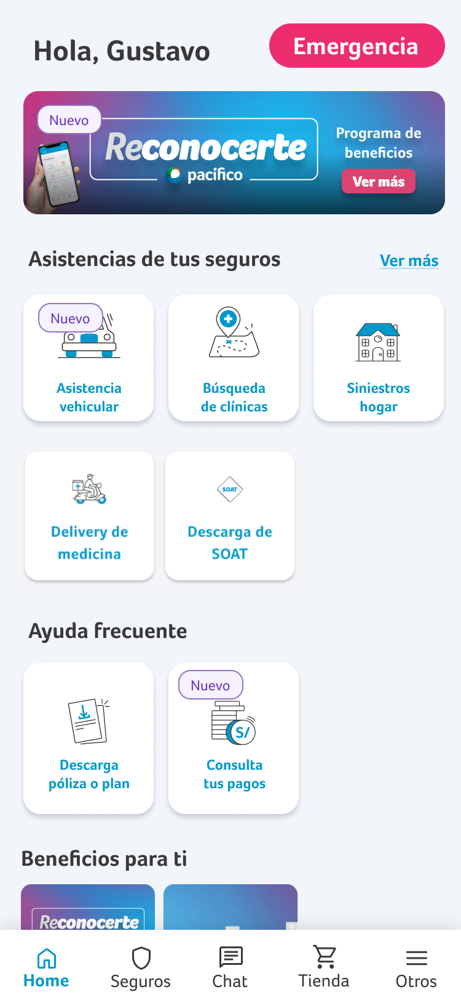
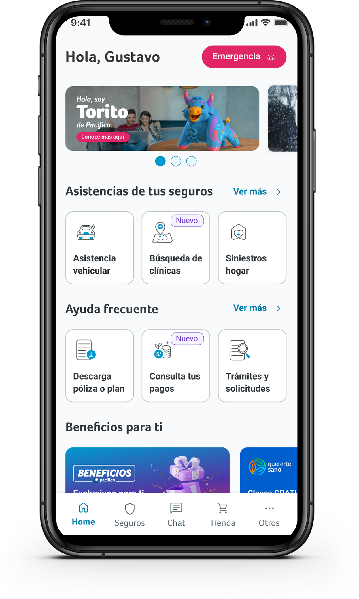
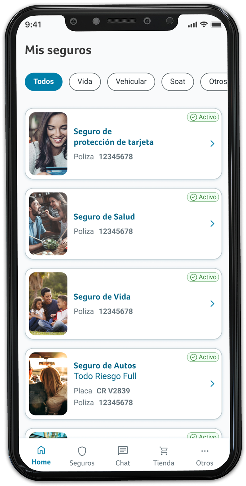

El reto
MEP (Mi Espacio Pacífico) es la plataforma de autogestión post-venta de Pacífico Seguros. Lideré el rediseño de dos pantallas clave del journey — Home y Mis Seguros — buscando aumentar la autogestión y reducir la dependencia del call center.
3 años de iteración sobre la misma pantalla
Home no se rediseñó una sola vez — es el resultado de 3 iteraciones sucesivas. Cada versión respondió a un aprendizaje distinto del anterior, no a un rediseño desde cero.



Senior Product & Service Designer
Diseño end-to-end de ambas pantallas: research de fricciones actuales, definición de flujos, alta fidelidad, y validación de criterios de accesibilidad antes de pasar a desarrollo.
Mis Seguros — de lista densa a estructura escaneable
Limpié la estructura de categorías y simplifiqué la búsqueda con filtros. Reduje el peso de las imágenes para priorizar la lectura de información (número de póliza, estado), amplié el área de selección de cada card y reestructuré el layout completo, cumpliendo criterios de accesibilidad.

Mis Seguros — diseño final con filtros, layout de card reestructurado y especificación de N° de póliza
Home — menos opciones, más eficiencia
Homologué la pantalla a la experiencia PGA ya establecida en otros canales, reduciendo la carga cognitiva a solo 3 opciones visibles por bloque (en vez de una lista extensa) — simplificando la toma de decisión del usuario. Reubiqué tags de "nuevo" para mayor visibilidad y le di más peso al banner de beneficios.
Home — diseño final con navegación simplificada y beneficios destacados
Coherencia con el sistema de diseño corporativo
No podía introducir patrones nuevos sin evaluar su impacto en la consistencia entre canales — cada decisión debía alinearse con el sistema de diseño corporativo existente y con la experiencia PGA ya implementada en otros flujos, en vez de resolver la pantalla como una pieza aislada.
Autogestión al alza, menos dependencia del call center
El experimento mostró incremento en la autogestión y reducción de consultas al call center (Mis Seguros), además de reducción de abandono e incremento de MAU y autogestión (Home). Por confidencialidad de datos internos de negocio, reporto la dirección del resultado, no las cifras exactas del experimento.